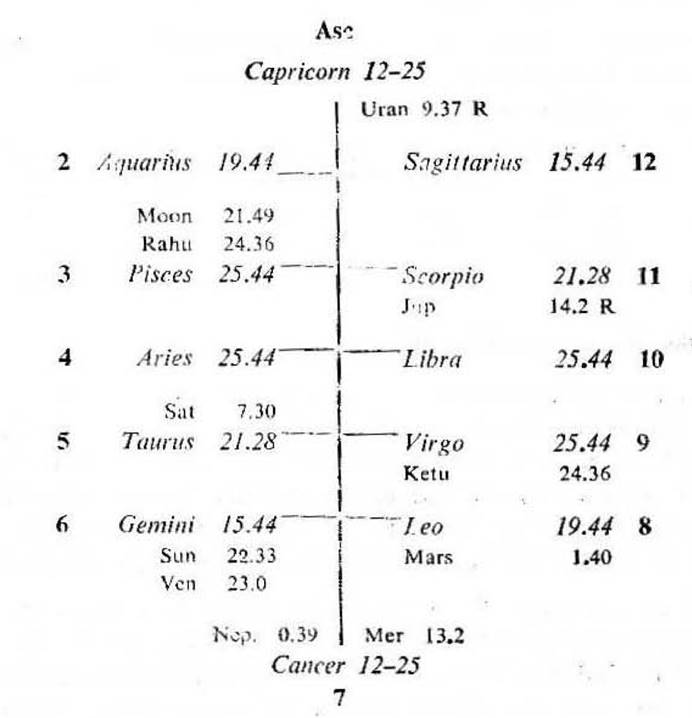
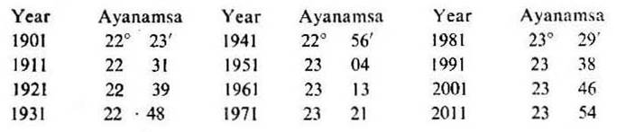
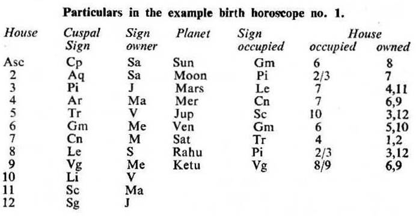

Male. Birth Date 7-7-1912, Sunday; 8-42 P.M. I.S.T; 23° N 2', 72° E 35'; Ayanamsa 22° 32'.

Abbreviations
S. Sun, M. Moon, Ma. Mars. Me. Mercury, J. Jupiter, V. Venus, Sa. Saturn, R. Rahu. K. Ketu. Ar. Aries, Tr. Taurus, Gm. Gemini, Cn. Cancer, Le. Leo, Vg. Virgo, Li. Libra, Sc. Scorpio, Sg. Sagittarius, Cp. Capricorn, Aq. Aquarius, Pi. Pisces.
First of all a horoscope for the time of birth should be erected according to the Western (Sayana) system with the aid of Raphael’s Ephemeris and Table of Houses.
Deduct ayanamsa for the required year of birth from the Sayana positions of the cusps of the houses and from those of the planets. So that the birth horoscope according to the Indian (Nirayana) system will be prepared. This horoscope should be written in the manner of a Western Horoscope.
Ayanamsa adopted for the A. D. year 1901 is 22° 23'. Then go on adding 50 seconds every year and you will get the ayanamsa for any required year viz.

1. The beginning point of each house is called the Cusp. The signs and degrees should be written down on the cusps of the houses in the blank map. In the example birth horoscope no. 1 Capricorn 12° 25' is placed on the cusp of the 1st house i.e. Asc. Aquarius 19° 44' on the cusp of the 2nd house and so on. In this way the signs and degrees on all the 12 cusps of the houses have been written down.
2. (a) The cusp of the 3rd house begins with Pisces 25° 44'. But the longitudes of Moon and Rahu in Pisces are 21° 49' and 24° 36' respectively. They are less than the cuspal degree of the 3rd house. So they are placed behind the cuspal degree of the 3rd house and they may be considered as posited in the 2nd house. If a planet is within 5° of the cuspal degree of a house, it exerts its influence on both the houses. In this case Moon and Rahu are within 5° of the cuspal degree of the 3rd house. So they can be said to be on the cusp of the 3rd house and they will exert some influence both on the 2nd and the 3rd house.
Similarly Saturn in Taurus 7° 30' is placed behind Taurus 21° 28' the cusp of the 5th house and it is said to be in the 4th house.
Mars in Leo 1°40' is placed behind Leo 19°44' the cusp of the 8th house and it is said to be in the 7th house.
Ketu in Virgo 24°36' is placed behind Virgo 25°44' the cusp of the 9th house and it is on the cusp of the 9th house. So Ketu will exert some influence on the 8th house and some on the 9th house.
Jupiter in Scorpio 14°2' R is placed behind Scorpio 21° 28' the cusp of the 11th house and it is said to be in the 10th house.
(b) The cusp of the 6th house begins with Gemini 15°44'. But the longitudes of Sun and Venus in Gemini are 22°33' and 23°00' respectively. They are greater than the cuspal degree of the 6th house. So they are placed in front of Gemini 15°44' and they are said to be in the 6th house.
Similarly Mercury in Cancer 13°2' is placed in front of Cancer 12°25' the cusp of the 7th house and it is said to be in the 7th house.
3. All the houses in the horoscope are not of equal dimensions. The house may be less or greater than 30 degrees. Sometimes one house may contain more than one sign. Such a sign is termed as 'Intercepted'.
In the example birth horoscope no. 1 the 5th house commences from Taurus 21° 28' and extends upto Gemini 15° 44'. So the 5th house is of 24° 16' dimension.
The 7th house begins with Cancer 12° 25' and ends at Leo 19° 44'. So the 7th house consists of 37° 19' and so on with other houses.

Rahu in Pisces represents Jupiter and Ketu in Virgo represents Mercury.
Angles: Saturn in the 4th, Mercury and Mars in the 7th and Jupiter in the 10th are placed in the Angles or Angular houses.
Succedent Houses: Moon and Rahu in the 2nd, and Ketu in the 8th are in the Succedent houses.
Cadent Houses: Sun and Venus in the 6th are in the Cadent houses. Moon and Rahu on the cusp of the 3rd and Ketu on the cusp of the 9th.
In Hindu astrology aspects are counted from sign to sign. All planets aspect the 7th sign counted from the signs occupied by them. In addition Mars aspects the 4th and the 8th sign, Jupiter aspects the 5th and the 9th sign, while Saturn aspects the 3rd and the 10th sign counted from the sign occupied by it.
Sun in Gemini is in conjunction (Conj.) with Venus. It also aspects the 12th cusp by its 7th aspect.
Moon in Pisces is in Conj. with Rahu. It also aspects Ketu in Virgo by its 7th aspect.
Mars in Leo aspects Jupiter in Scorpio by its 4th aspect. It aspects the 2nd cusp by its 7th aspect. It also aspects Rahu and Moon in Pisces by its 8th aspect.
Mercury in Cancer aspects the Asc by its 7th aspect.
Jupiter in Scorpio aspects Saturn in Taurus by its 7th aspect. It aspects Rahu and Moon in Pisces by its 5th aspect and it aspects Mercury in Cancer by its 9th aspect. It also aspects the 5th cusp by its 7th aspect and aspects the 3rd cusp by its 5th aspect.
Venus in Gemini is in Conj. with Sun and it aspects the 12th cusp by its 7th aspect.
Saturn in Taurus aspects Mercury in Cancer by its 3rd aspect. It aspects Jupiter in Scorpio by its 7th aspect. It aspects the 2nd cusp by its 10th aspect and the 11th cusp by its 7th aspect.
In this horoscope the native was born during the period of Mercury with balance of 10Y 5M 6D.